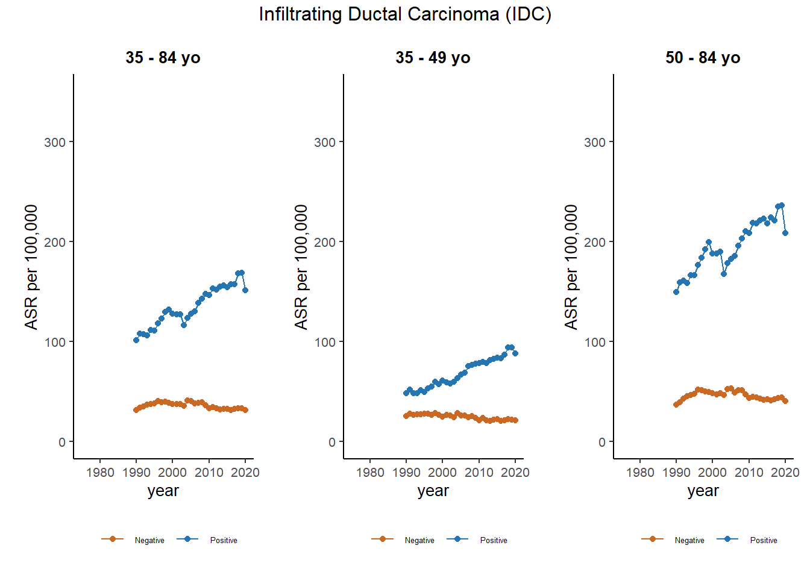

Breast cancer - IDC vs DCIS
Figure 1. Trends in Age-Standardized Incidence Rates for Breast Cancer, by subtype.
Figure 2A and B. Trends in Age-Standardized Incidence Rates of Breast Cancer Infiltrating Ductal Carcinoma (IDC) Classified by ER Status and Age Group, From 1990 to 2020
